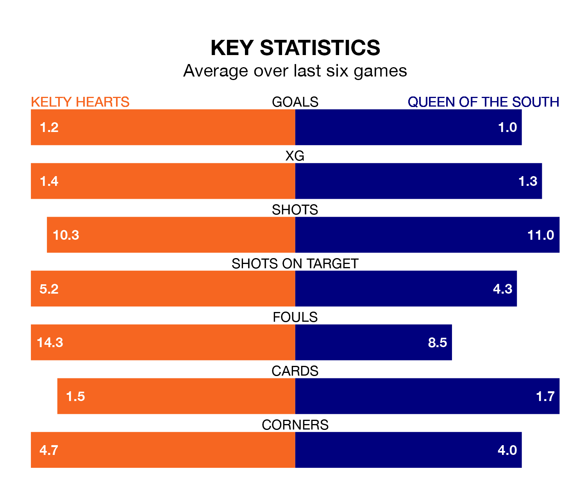

Saturday's match between Kelty Hearts and Queen of the South promises to be one for the neutrals, as two of League One's most free-scoring sides go head-to-head.
Ahead of the game at New Central Park, Kelty Hearts and the Doonhamers sit joint-fourth in the goal-scoring charts, with 30 goals apiece.
Midfielder Alfie Bavidge leads the way for the home side, having bagged seven goals in their 21 games to date.
And Gavin Reilly has been the main man in the opponents' penalty box for Queen of the South, with seven goals.
In the last 10 years, Kelty Hearts and Queen of the South have played each other on seven occasions. Kelty Hearts won five of them, Queen of the South one, and they drew once.
On average, Kelty Hearts scored 1.9 goals and the Doonhamers 1.0 in those matches.
Their last meeting was on November 18, when Kelty Hearts won 3-1 away.
Queen of the South's Reilly is among the league's most creative players, racking up six assists in 18 appearances so far this season, and holding second spot in League One's assist charts.
For Kelty Hearts, Jamie Walker has set up the most goals, having laid on three assists in 14 games.
The hosts are in disappointing form in League One, with one win and three draws from their last six games.
With two wins and two draws over that period, the Doonhamers's form is slightly better – they have taken eight points from 18, compared to Kelty Hearts's six.
The away team are seventh in the table after 23 games, of which they have won eight and drawn three, earning 27 points.
Kelty Hearts are one place ahead of Queen of the South in sixth, with seven wins and six draws putting them on the same number of points.
Kelty Hearts's last match was on February 3, a 3-0 win against Edinburgh City, with Bavidge getting the goals for Kelty Hearts.
Queen of the South lost 2-0 against Hamilton Academical last time out, also on February 3.
Updated: 14:59 (UTC), 05/02/24